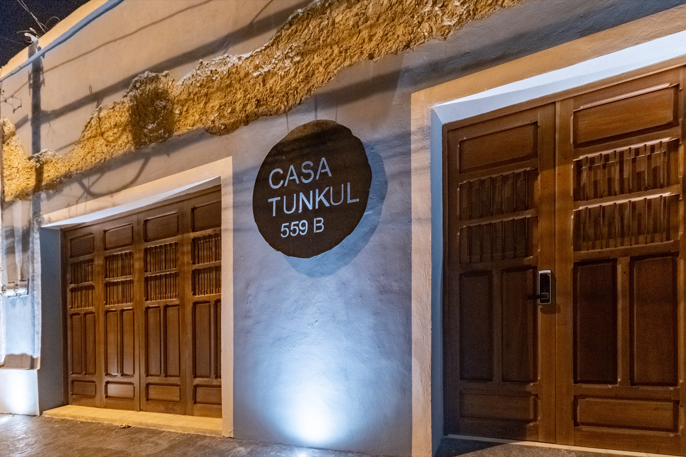
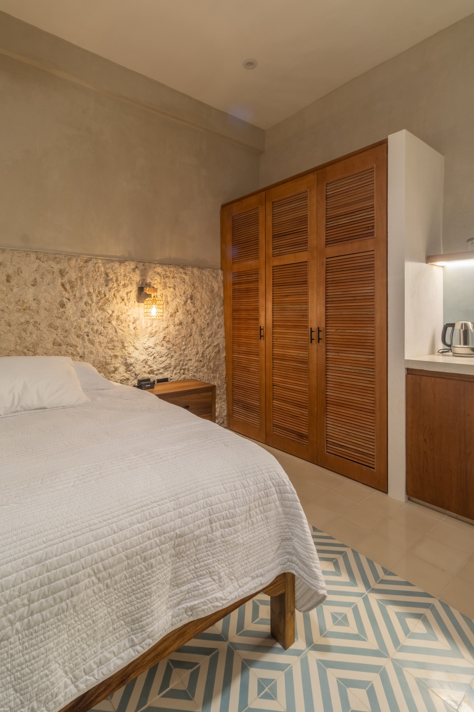
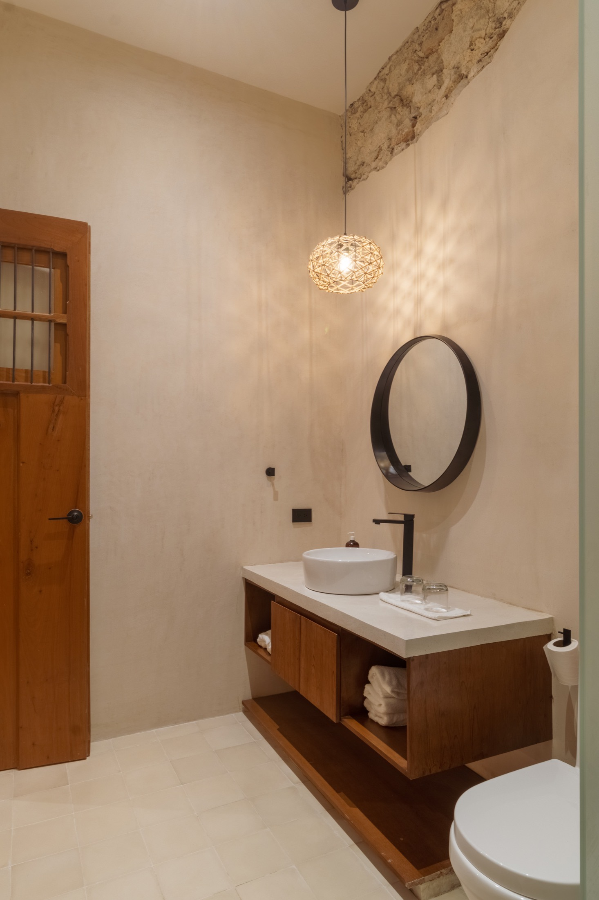
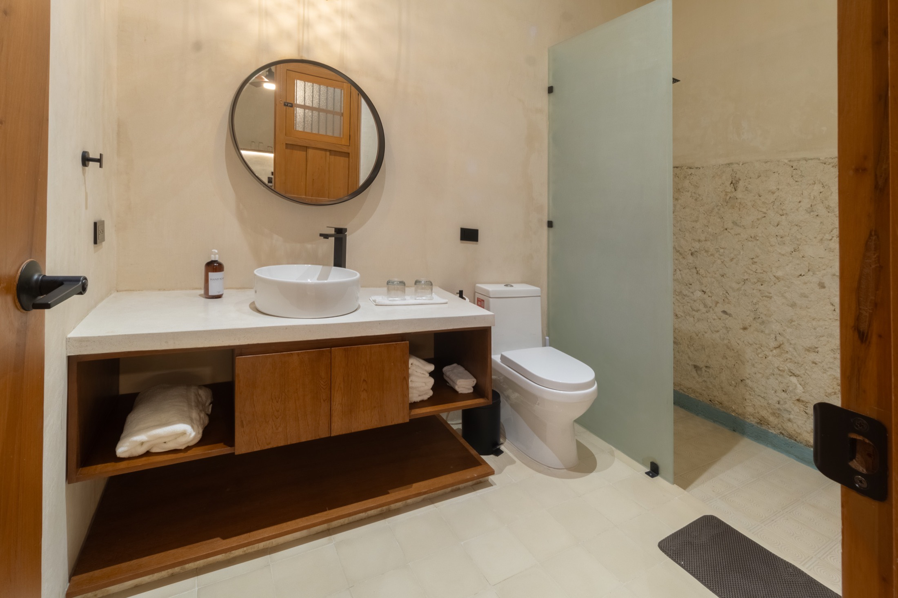
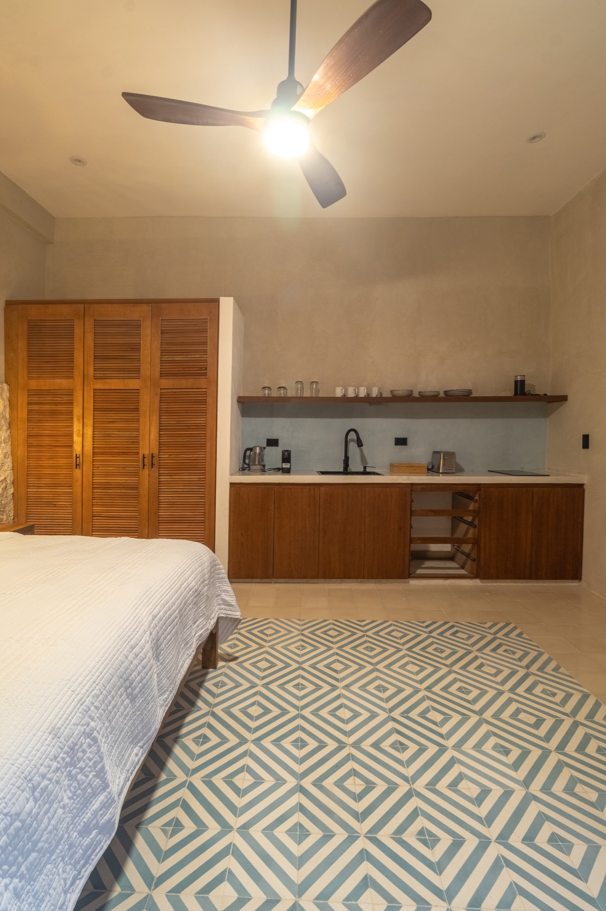
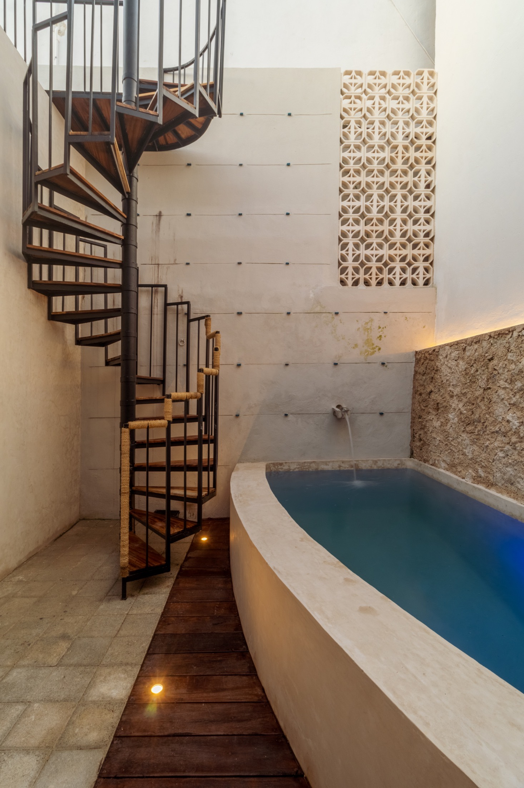
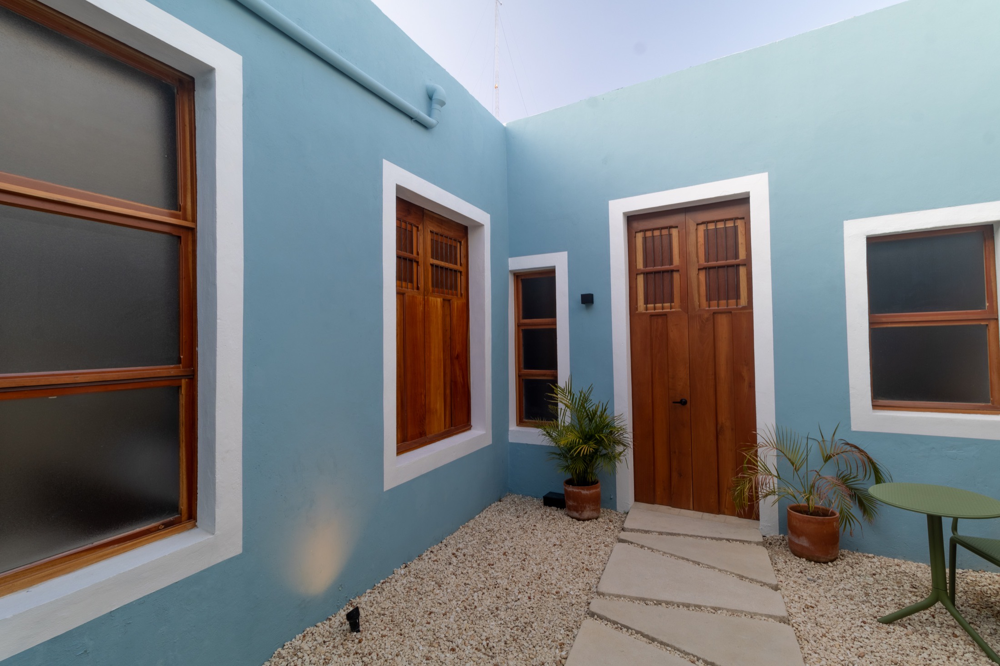
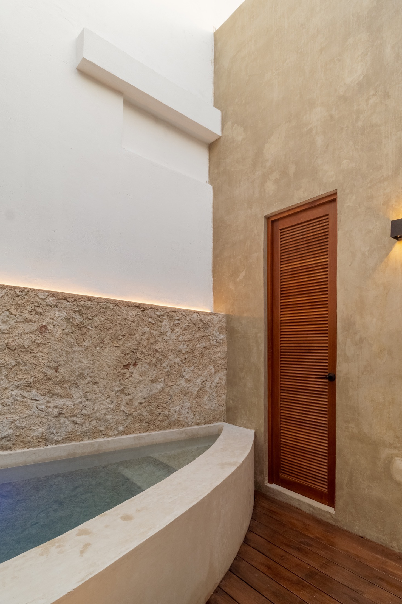

Hotel Boutique en Barrio de Santiago
Elegancia íntima en el corazón de Mérida
Un refugio de arquitectura yucateca, diseño contemporáneo y descanso total. Reserva en nuestro motor seguro para confirmar disponibilidad y tarifa.
Reseñas verificadas
Lo que dicen nuestros huéspedes en Booking
Datos consolidados desde export oficial de Booking. Comentarios anonimizados para proteger privacidad de los huéspedes.
Fuente: export de reseñas de Booking proporcionado por el alojamiento (archivo CSV).
Reconocimiento
Casa Tunkul destacada en Review Awards 2026
Un reconocimiento al compromiso con una hospitalidad cuidada, diseño excepcional y experiencia de estancia consistente.
Suites
Espacios diseñados para desconectar

Habitación king con tina
Nuestra suite más exclusiva: cama king size de lujo, tina independiente, baño amplio, cocineta de diseño y vista doble a la calle y al jardín central.
Ideal para quienes buscan una experiencia de descanso superior con privacidad y elegancia.
Ver ficha y fotos
Habitación queen cálida
Una suite íntima y acogedora con cama queen size, baño privado amplio, cocineta completa y vista al jardín central para una estancia relajante.
Perfecta para descansar con comodidad y ambiente sereno durante tu visita a Mérida.
Ver ficha y fotos
Suite armónica king
Nuestra suite más espaciosa y tranquila, con cama king size, baño con luz natural cenital, cocineta completa y vista a la piscina.
Ideal para combinar amplitud, privacidad y un toque de exclusividad en Mérida.
Ver ficha y fotosFicha de habitación
Habitación king con tina
Sumérgete en una experiencia de descanso superior en nuestra suite más exclusiva, diseñada para quienes valoran el confort y la elegancia. La habitación ofrece cama king size de lujo, aire acondicionado, ventilador de techo, pantalla LCD de 55” y un amplio baño privado con ducha independiente y tina, ideal para relajarte después de explorar Mérida.
La cocineta de diseño está equipada para una estancia sin compromisos: estufa de inducción, frigobar, cafetera Nespresso, tetera eléctrica, máquina para hacer hielo, espumador de leche, tostadora, sartenes, ollas, platos, vasos, copas, sacacorchos y cubiertos. Con vista doble a la calle y al jardín central, combina privacidad, luz natural y un ambiente acogedor.


Ficha de habitación
Habitación queen cálida
Pensada para quienes buscan un ambiente íntimo y cálido, esta suite ofrece cama queen size, aire acondicionado, ventilador de techo y pantalla LCD de 50” para descansar después de recorrer la ciudad. El baño privado cuenta con ducha amplia para mayor comodidad y privacidad.
La cocineta totalmente equipada incluye estufa de inducción, frigobar, cafetera Nespresso, tetera eléctrica, máquina para hacer hielo, espumador de leche, tostadora, sartenes, ollas, platos, vasos, copas, sacacorchos y cubiertos. Con vista al jardín central, brinda un entorno relajante que conecta con la esencia de Casa Tunkul.


Ficha de habitación
Suite armónica king
Nuestra suite más espaciosa y tranquila está diseñada para quienes buscan un ambiente relajante con todo el confort. Cuenta con cama king size, pantalla LCD de 55”, aire acondicionado y ventilador de techo para asegurar una estancia fresca y cómoda en cualquier momento del día.
El baño privado ofrece una ducha amplia con luz natural gracias a un elegante cubo de iluminación cenital que conecta con el cielo y llena el espacio de claridad. La cocineta incluye estufa de inducción, frigobar, cafetera Nespresso, tetera eléctrica, máquina para hacer hielo, espumador de leche, tostadora, sartenes, ollas, platos, vasos, copas, sacacorchos y cubiertos. Su vista a la piscina completa una experiencia serena y exclusiva.
Áreas comunes
Áreas comunes en Casa Tunkul
El patio central, la piscina y el rooftop están diseñados para que vivas una estancia relajada en un ambiente íntimo y armonioso.
Cada espacio conserva la esencia arquitectónica de Casa Tunkul y está pensado para disfrutar Mérida con calma, comodidad y estilo.
Ubicación
Cerca de todo lo que importa en Mérida
A minutos de Paseo Montejo, cafeterías de autor, galerías y restaurantes. Ideal para vivir la ciudad caminando.
Barrio de Santiago
15-20 min a Paseo de Montejo
Zona gastronómica
Movilidad rápida
Encuéntranos en Google Maps
Calle 55 No. 559 B entre calles 72 y 74, Barrio de Santiago, Centro, Mérida, Yucatán, México.
Qué hacer cerca
Guía local a pie desde Casa Tunkul
Selección curada de lugares turísticos (sin hoteles) para comer, caminar, tomar algo y conocer Mérida. Incluye Santa Lucía y Centro Histórico, con tiempos y distancias aproximadas caminando desde Casa Tunkul.
Santa Lucía: restaurantes recomendados
-
Restaurante 9 min · ~750 mApoala
Cocina oaxaqueña con propuesta contemporánea frente al parque.
Cómo llegar -
Restaurante 9 min · ~750 mLa Tratto Santa Lucía
Pizza-bar y pastas con terraza y gran ambiente nocturno.
Cómo llegar -
Restaurante 9-10 min · ~800 mTeya Santa Lucía
Cocina yucateca tradicional en formato elegante.
Cómo llegar -
Restaurante 9-10 min · ~800 mRosa Sur 32
Cocina de autor y coctelería con vista al corredor de Santa Lucía.
Cómo llegar -
Café restaurante 9 min · ~750 mMi Viejo Molino Santa Lucía
Ideal para desayunos y café en el área del parque.
Cómo llegar -
Restaurante 8-9 min · ~700 mNOL Santa Lucía
Propuesta contemporánea en la zona gastronómica del centro.
Cómo llegar -
Restaurante 10-12 min · ~1.0 kmLa Chaya Maya Casona (Santa Lucía)
Clásico yucateco para probar platillos regionales tradicionales.
Cómo llegar -
Restaurante 10-14 min · ~1.1 kmMicaela Mar & Leña
Cocina de autor con acento regional y gran carta de bebidas.
Cómo llegar
Bares y vida nocturna local
-
10-12 min · ~1.0 kmLa Negrita Cantina
Cantina clásica de Mérida con música en vivo y ambiente local.
Cómo llegar -
10-12 min · ~1.0 kmDzalbay Cantina
Cantina bohemia con trova, jazz y conciertos en formato íntimo.
Cómo llegar -
10-14 min · ~1.1 kmMercado 60
Opciones de comida, cerveza y música para noche relajada.
Cómo llegar -
11-14 min · ~1.2 kmLa Fundación Mezcalería
Bar nocturno popular para cerrar el recorrido por el centro.
Cómo llegar -
8-11 min · ~900 mPipiripau Bar
Coctelería y ambiente del centro para salida de noche.
Cómo llegar
Cultura, parques y caminatas
-
Parque 2-4 min · ~300 mParque de Santiago
Vida barrial, arquitectura tradicional y punto ideal para caminar.
Cómo llegar -
Mercado 3-5 min · ~450 mMercado de Santiago
Comida tradicional yucateca y ambiente local auténtico.
Cómo llegar -
Iglesia 4-6 min · ~500 mIglesia de Santiago Apóstol
Templo histórico representativo del barrio de Santiago.
Cómo llegar -
Parque 9 min · ~750 mParque de Santa Lucía
Serenata yucateca y epicentro gastronómico del Centro Histórico.
Cómo llegar -
Centro histórico 9-10 min · ~850 mPlaza Grande
Corazón del Centro Histórico: catedral, portales y vida cultural.
Cómo llegar -
Museo 9-11 min · ~900 mMuseo Casa Montejo
Arquitectura histórica y piezas clave de la vida colonial yucateca.
Cómo llegar -
Museo 11-14 min · ~1.2 kmPalacio Cantón
Museo Regional de Yucatán sobre Paseo de Montejo.
Cómo llegar -
Museo 14-17 min · ~1.4 kmMuseo de la Canción Yucateca
Ruta cultural ideal para amantes de la música regional.
Cómo llegar -
Parque 14-21 min · ~1.8 kmParque La Plancha
Gran parque urbano para caminata, bici y actividades culturales.
Cómo llegar -
Paseo 16-22 min · ~1.4-1.8 kmPaseo de Montejo
Recorrido icónico para caminar entre arquitectura histórica y cafés.
Cómo llegar
Cafés y cafeterías recomendadas
-
Cafetería 4-6 min · ~500 mPlacer y Delirio
Panadería-cafetería artesanal muy cerca de Casa Tunkul.
Cómo llegar -
Cafetería 8-10 min · ~800 mManifesto (Casa Tostadora, Santiago)
Café de especialidad y tostado local en barrio de Santiago.
Cómo llegar -
Cafetería 5-7 min · ~500 mCafé Montejo (Calle 59 x 74, Santiago)
Cafetería en Barrio de Santiago, cerca de Casa Tunkul (Calle 59 con 74).
Cómo llegar -
Cafetería 11-13 min · ~1.1 kmCafetería Pop
Ícono clásico del centro para desayuno, café y ambiente local.
Cómo llegar -
Café restaurante 9 min · ~750 mMi Viejo Molino (Santa Lucía)
Muy buena opción para desayunos y café en la plaza.
Cómo llegar
Nota: tiempos y distancias aproximadas a pie con ritmo ligero desde Casa Tunkul.
Nuestra esencia
Casa Tunkul: historia, cultura y tradición en Santiago
Bienvenido a Casa Tunkul, un espacio boutique en el corazón del barrio de Santiago, Mérida, Yucatán. La casa combina herencia cultural yucateca con comodidades modernas para una estancia íntima, elegante y funcional.
Un hogar con historia
La propiedad fue adquirida originalmente por Víctor Manuel Martínez Herrera, poeta y compositor yucateco nacido en Cansahcab en 1896, autor de la emblemática canción “El Tunkul” (con música de Carlos Marrufo Cetina) y coautor de “Beso Asesino” junto a Pepe Domínguez.
Durante su etapa en esta casa, Martínez Herrera vivió rodeado de inspiración, dejando un legado artístico que hoy forma parte de la identidad de Casa Tunkul.
Ubicación privilegiada
Desde Casa Tunkul puedes recorrer Mérida a pie: a pocos minutos encontrarás el Parque de Santa Lucía, Paseo de Montejo, el Parque de La Plancha y otros puntos culturales y turísticos clave de la ciudad.
Lo que ofrecemos
- Habitaciones únicas: tres espacios privados con carácter propio y cocineta equipada.
- Áreas comunes encantadoras: piscina, roof, jardín central y sala de lectura.
- Recepción dinámica: atención flexible adaptada a las necesidades de cada huésped.
Reserva Oficial
Haz tu reserva en el motor seguro de Casa Tunkul
Para mayor seguridad, toda la disponibilidad y el pago se gestionan desde Cloudbeds.
Selecciona fechas, habitación y método de pago desde la plataforma oficial.
Reservar en Cloudbeds